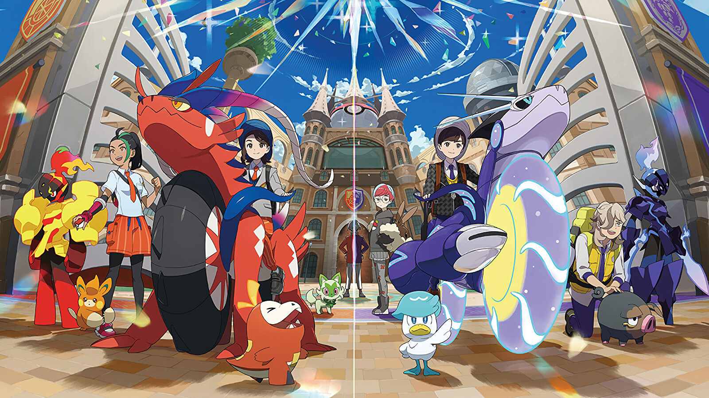

Pokemon Scarlet
São jogos eletrônicos de RPG desenvolvidos pela Game Freak e publicados pela Nintendo e The Pokémon Company. Anunciados em fevereiro de 2022, são os primeiros títulos da nona geração da série de jogos Pokémon.
Foram lançados em 18 de novembro de 2022 para Nintendo Switch.
Ao contrário dos jogos anteriores da franquia Pokémon, Scarlet e Violet se passa em um mundo aberto, semelhante ao Pokémon Legends: Arceus.
O jogo se passa na região de Paldea, localizada na Península Ibérica. Existem três histórias separadas nas quais os jogadores podem
participar. Scarlet e Violet apresenta 103 novos Pokémon, juntamente com 4 novas formas regionais, e o fenômeno Terastal, que permite que um Pokémon
se transforme em seu exclusivo Tipo Tera.
O jogo também mantém recursos de jogos Pokémon modernos anteriores, incluindo grandes áreas
abertas e Pokémon que aparecem no mundo exterior.